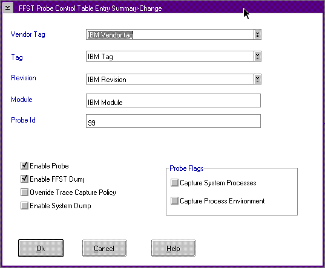

Probe Control Table (PCT) Entry Add or Change Summary Window
Use the Probe Control Table Entry Summary window (FFST Probe Control Table
Entry Summary Window) to either add or change individual calls to the FFSTProbe
function in a product.
Use the options on the Probe Control Table window to capture information
that was not requested in the original call to the FFSTProbe function. Use
the PCT options to specify system process information (PSTAT) or process
environment information not in the parameters of the original call. You
can also capture trace information, capture a system dump, and capture a
process dump through the PCT for a specific FFSTProbe call. The system
uses PCT values if the parameters on the FFSTProbe call and PCT are different.
For the PCT values to be used, the Enable Probe box must be "checked."
The Enable FFST Dump box can be "checked" to have a FFST dump generated
by the probe. The Enable FFST Dump box must be "checked" before
the Capture Trace Snapshot, Capture Process Dump, Capture
System Processes, or Capture Process Environment data will be
captured. To capture a system dump you only need to "check" the Enable
Probe and the Capture System Dump boxes.
FFST Probe Control Table Entry Summary Window

The following list defines the fields on the FFST Probe Control Entry Summary
window:
Vendor Tag, Tag, and Revision
This is the VPD information
for your product that is stored in DMI.
Module and
Probe ID
Parameters on the call to the FFSTProbe
function that identify the individual call.
Enable
Probe
Used to enable or disable (turn on or turn
off) the individual call to FFSTProbe.
Enable FFST
Dump
Used to specify whether to save FFST Dump
information for the individual call.
Capture Trace
Snapshot
Used to collect trace data if your code
did not specify trace in the original call to FFSTProbe.
Capture
System Dump
Use this option to perform a system
dump for calls to the FFSTProbe function. Note that the system restarts
after storing the system dump information.
Capture
Process Dump
Use this option to allow the system
to capture process dump data. You can view the process dump data when you
format the FFST dump associated with this probe ID.
Capture
System Processes
Used to capture information about
all the processes and threads that are running on the system. This information
is similar to the PSTAT information that is viewed by using the PSTAT command.
For more information about the PSTAT command, refer to the OS/2 Warp
Version 4 Command Reference.
Capture Process
Environment
Used to capture the values of environment
variables for the process.
You access this window by using the following:
- From the PCT summary window, select an entry and click
on either the Details or Change push button.
- Details - Displays the details about the selected
entry. You can only view the information.
- Change - Displays the selected entry and
allows information to be changed.
�
From
the PCT summary window, select Add, or Change from the Edit
options.
All fields are empty, and you add information as required.
�
From
the SYSLOG utility, use the Tools menu-bar option from any details
window and select the Modify Entry Collection option.
All fields contain information about the selected entry. You can change
the information. If an entry is not in the PCT file, the system displays
the default settings.
You cannot use wild card characters for Vendor Tag, Tag, Revision, module
name, or probe ID. When you add a new entry, the system checks the PCT
for duplicate entries.
[Back: Probe Control Table (PCT) User Interface]
[Next: Viewing and Analyzing Error Log Entries]